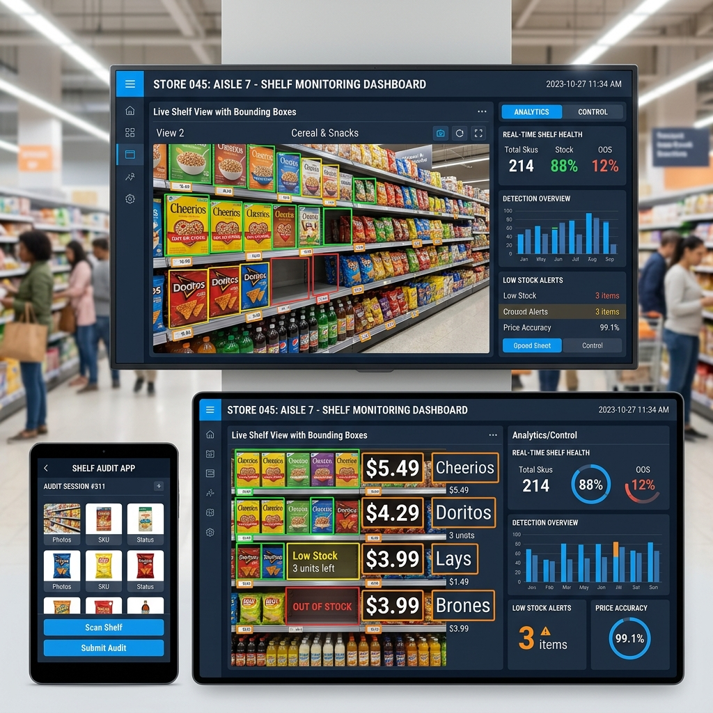

Featured Projects
E-commerce Customer Behavior Analysis
Comprehensive analysis of e-commerce customer behavior using a dataset of 350 customers with 11 variables. Conducted exploratory data analysis, customer segmentation and linear regression to identify key drivers of spending. Visualized behavioral patterns across demographics and geographies.
Key Findings: Gold customers and San Francisco residents are the biggest buyers, with men spending slightly more than women. Generated targeted marketing recommendations for each segment.
Stack: Python · Pandas · Matplotlib · Seaborn · Linear Regression
Climate Change Impact on Agriculture
Statistical analysis of 10,000 data points revealing crop yield impacts from CO2 levels, temperature variations and extreme weather events. Applied regression modeling, hypothesis testing and time series visualization to quantify environmental risks. The Random Forest model predicts a 20% yield decline risk by 2030 in vulnerable regions.
Deliverables: Policy recommendations on crop adaptation, optimized irrigation strategies and CO2 reduction priorities.
Stack: Python · Pandas · Matplotlib · Seaborn · Scikit-learn · Statistical Tests

Automated IT Tenders & Job Crawler
An intelligent data aggregation and monitoring engine that collects, filters and structures IT opportunity data from multiple international and regional organizations. Features an advanced rule-based matching engine with geographic targeting, delivering structured daily reports via automated email pipelines.
Stack: Python · Playwright · BeautifulSoup · curl-cffi · Feedparser · SMTP · Regex

Shelf Audit Analytics Dashboard
As part of the larger Intelligent Shelf Audit System for UCB, contributed to the analytics and reporting layer: designing dashboards and KPIs to track product placement compliance, shelf availability, and pricing accuracy across multiple field agents in real time.
Stack: Python · React · Plotly.js · Firebase · FastAPI
